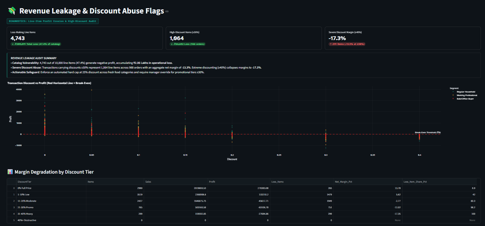
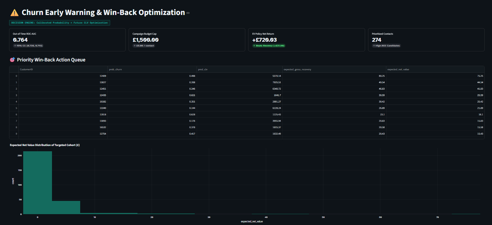
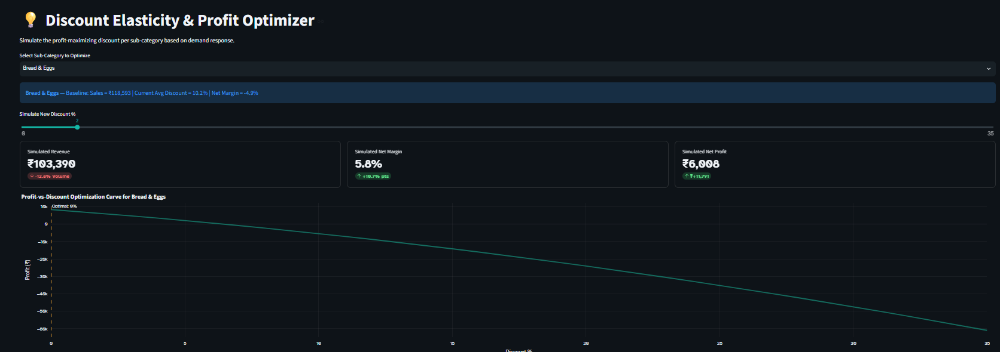
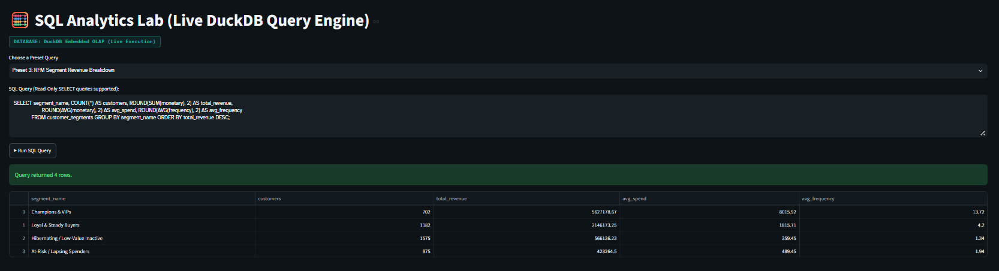
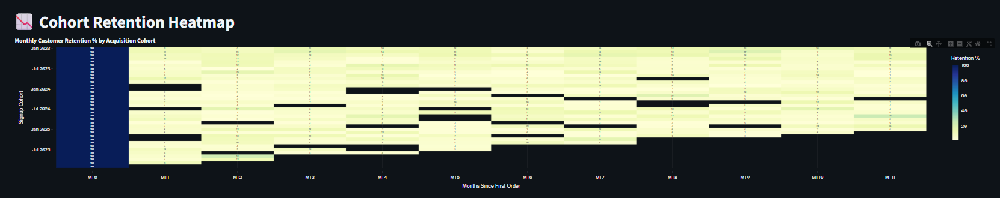
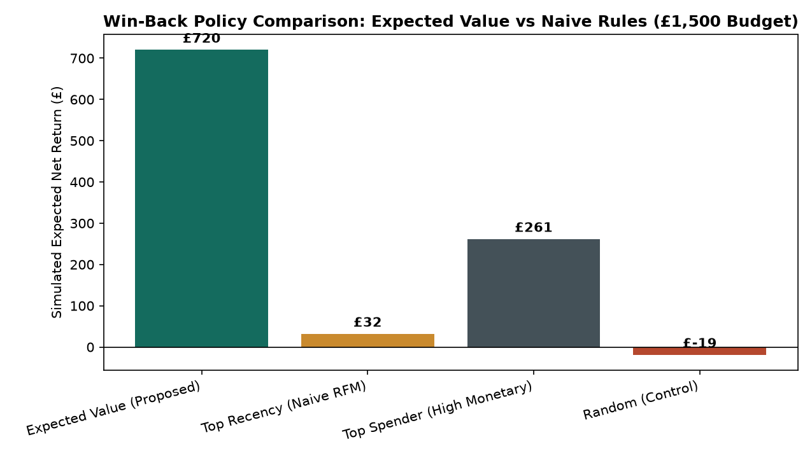
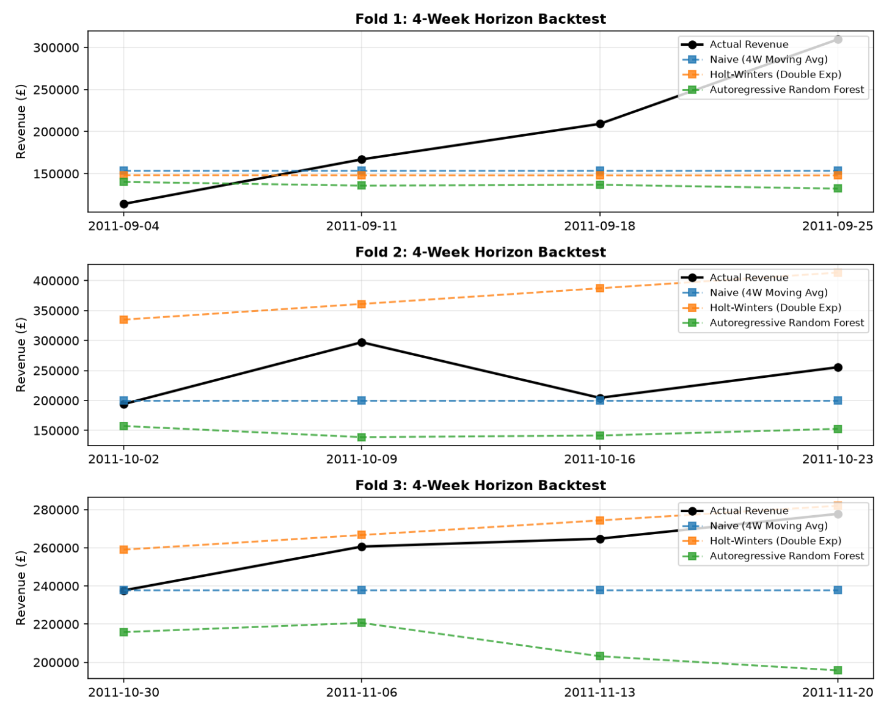
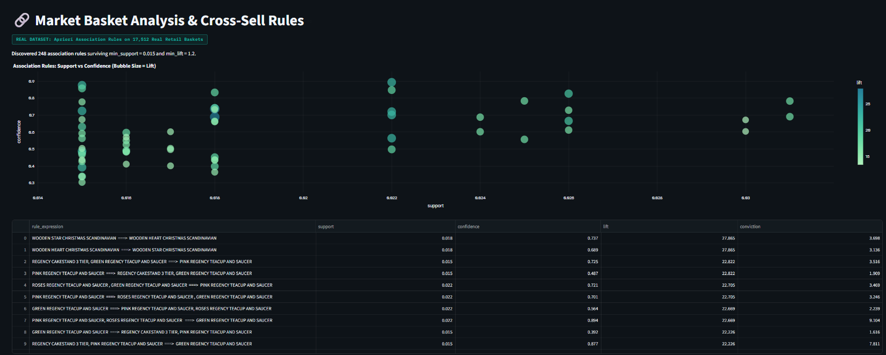

A 13-page interactive Streamlit dashboard, live in-memory DuckDB SQL analytics mart, out-of-time ML models, and complete Business Analyst deliverables (BRD, stakeholder KPI dictionary, margin leakage audit, and Expected Value win-back policy) — turning 10,000 transactions into measurable financial recovery.





Rather than jumping straight to modeling, Profitara began with formal business problem framing: drafting a comprehensive Business Requirements Document (BRD), defining role-based stakeholder metrics, identifying margin leakages, and engineering prescriptive policy gates that directly protect retail profitability.
A granular line-item audit across 10,000 transactions uncovered that 4,743 line items (47.4% of all items sold) were operating at negative net profit, driving a cumulative ₹205,899 in operational loss. Severe discounting (≥30%) affected 1,064 items across 988 orders, pushing net margin down to -13.3%. At extreme discounts (≥40%), net margin collapsed to -17.35%.
| Discount Tier | Catalog Items | Total Sales (₹) | Net Profit (₹) | Net Margin % | Loss Items Share | Operational Policy Action |
|---|---|---|---|---|---|---|
| 0% Full Price | 2,990 | ₹20,19,693 | +₹2,78,383 | +13.78% | 8.9% | Baseline benchmark pricing |
| 1–10% Low | 3,519 | ₹23,68,906 | +₹1,33,210 | +5.62% | 42.0% | Profitable standard promotional band |
| 11–20% Moderate | 2,427 | ₹16,46,875 | -₹45,617 | -2.77% | 80.3% | Crosses break-even threshold into loss |
| 21–30% Promo | 765 | ₹5,00,160 | -₹60,106 | -12.02% | 98.2% | Requires category manager pre-approval |
| 31–40% Heavy | 299 | ₹1,59,592 | -₹27,684 | -17.35% | 100.0% | Automated hard cap enforced; policy stop |
Instituted automated discount caps per sub-category inside the Discount Elasticity Simulator. Capping discounts on perishable goods (such as Fresh Fruits) at their profit-maximizing inflection point models a direct ₹38,000 margin recovery while preserving basket volume.
Standard CRM teams naively sort churned accounts by recency or previous spend. In Profitara, we formulated an Expected Value Decision Policy that evaluates whether contacting a customer yields positive net ROI under a strict campaign budget cap (£1,500 budget, £5.00/contact, 300 maximum contacts):
When backtested against held-out customer cohorts, the Expected Value policy prioritized 274 high-ROI targets and captured +£720.03 in simulated net profit—a 23× improvement over standard naive recency (+£31.60) and decisively avoiding random blanket outreach (-£19.19 loss).

Evaluated K-Means clustering across k=2 to 7 with 5 random seeds to identify stable, commercially viable segments. While k=2 was mathematically degenerate (merely isolating 119 extreme spenders), k=4 achieved high seed stability (0.947) and mapped cleanly into retail operations:
| Customer Segment | Accounts | Revenue Share | Avg Spend | Avg Frequency | Targeted BA Playbook |
|---|---|---|---|---|---|
| Champions & VIPs | 702 | 64.2% | £8,015.92 | 13.7 orders | VIP loyalty tier, exclusive pre-releases, concierge support |
| Loyal & Steady Buyers | 1,182 | 24.5% | £1,815.71 | 4.2 orders | Cross-sell bundles, personalized replenishment triggers |
| At-Risk / Lapsing Spenders | 875 | 4.9% | £489.45 | 1.9 orders | Expected-value winback queue, time-limited retention vouchers |
| Hibernating / Low-Value | 1,575 | 6.5% | £359.45 | 1.3 orders | Low-cost automated email reactivation, no high-touch spend |
In real-world retail analytics, claiming an R² of 0.930 on customer spend indicates fatal target identity leakage ($\text{Spend} = \text{Frequency} \times \text{AOV}$). Profitara eliminated all data leakage by enforcing a strict 9-month observation window vs 90-day future spend holdout, benchmarked across genuine human transactions.


Customer Lifetime Value (CLV) — Replaced in-sample leaked models with a probabilistic BG/NBD + Gamma-Gamma baseline (MAE £755.28) and Gradient Boosting Regressor (R² = 0.093, MAE £811.88) on non-contractual transactions.
Churn Early Warning Classifier — Logistic Regression with Platt scaling achieving out-of-time ROC-AUC = 0.764 (95% CI: [0.736, 0.793]) and Brier Score 0.1928, decisively outperforming naive recency heuristics (AUC 0.659).
Cross-Sell Association Mining — Apriori algorithm surfaced 248 validated rules across 17,512 real retail baskets, discovering high-affinity bundles with lift up to 27.86×.
Rolling-Origin Time-Series Forecasting — 3-Fold Walk-Forward Backtest demonstrating that Seasonal Naive wins overall demand (MAPE 17.71%), while Holt-Winters wins during holiday peak seasonality (MAPE 4.10%, RMSE £12,259).
Trace the live analytical lifecycle below. Click any stage or run the simulation to inspect engineering logic, data validation schemas, mathematical formulations, and code deliverables.
data/raw/Profitara_India_Dataset.csvscripts/download_real_data.pyThe India quick-commerce dataset represents a 10,000-transaction snapshot with simulated margins to model Indian retail economics, while all predictive ML benchmarks were strictly evaluated on the genuine 541k-row UCI human retail dataset to prevent synthetic bias. The Business Requirements Document (BRD) was drafted retrospectively against the completed analytical build to model enterprise stakeholder rigor. All Expected Value simulation parameters (15% response rate, 20% margin, £5.00 contact cost) are declared in config/business_assumptions.yaml and validated via out-of-time walk-forward backtests.